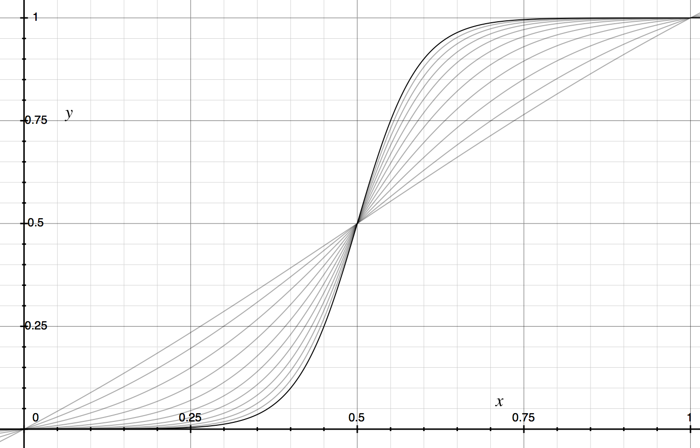
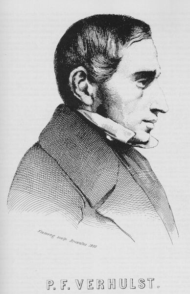

{
"layout": "post",
"title": "Sigmoid Curves",
"date": "2017-10-21 12:00:00 -0400",
"categories": "general"
}S-Curves:

The beautiful S-Curve. A curve we encounter daily, revealed itself tonight as an optional output from machine learning algorithms.

"The function was named in 1844–1845 by Pierre François Verhulst, who studied it in relation to population growth. The initial stage of growth is approximately exponential; then, as saturation begins, the growth slows, and at maturity, growth stops.
The logistic function finds applications in a range of fields, including artificial neural networks, biology (especially ecology), biomathematics, chemistry, demography, economics, geoscience, mathematical psychology, probability, sociology, political science, linguistics, and statistics."
What more proof does one need; look at that lineup!